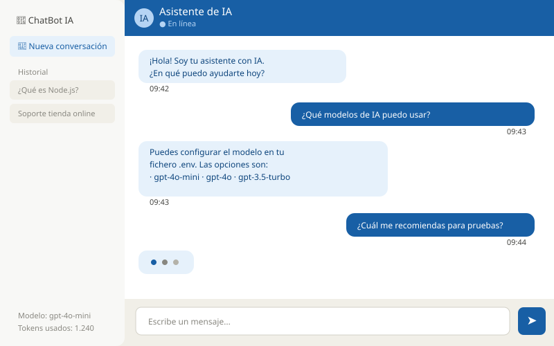

📖 Uso del Chatbot
Objetivo
Aprender a interactuar con el chatbot, personalizar su comportamiento mediante el system prompt y entender el flujo completo de una conversación.
Requisitos
- Chatbot instalado y en ejecución (ver Quickstart)
- Navegador web moderno
- Clave de API de OpenAI con saldo disponible
Pasos
1. Acceder a la interfaz
Con el servidor en marcha, abre:
http://localhost:3000
Verás la interfaz de chat con un campo de texto en la parte inferior.

2. Enviar un mensaje
Escribe tu mensaje en el campo de texto y pulsa Enter o el botón de enviar. El chatbot procesará tu consulta y responderá en pocos segundos.
Ejemplos de mensajes para probar:
¿Qué puedes hacer?Explícame qué es una API RESTDame un ejemplo de código en Python para leer un fichero
3. Personalizar el comportamiento con el System Prompt
El system prompt define la personalidad y las restricciones del chatbot. Se configura en server.js:
const systemPrompt = `
Eres un asistente técnico especializado en desarrollo web.
Respondes siempre en español.
Eres conciso y usas ejemplos de código cuando es útil.
No respondes preguntas que no sean de tecnología.
`;
4. Flujo de una conversación completa
El ciclo de vida de cada mensaje sigue este flujo:
1. Usuario escribe mensaje en el frontend (HTML/JS)
│
▼
2. Frontend envía POST /api/chat con el mensaje en JSON
│
▼
3. Backend (Express) recibe la petición
│
▼
4. Backend llama a la API de OpenAI con el historial
│
▼
5. OpenAI devuelve la respuesta generada
│
▼
6. Backend reenvía la respuesta al frontend
│
▼
7. Frontend muestra la respuesta al usuario
El cuerpo de la petición que el frontend envía al backend es:
{
"message": "¿Qué es Node.js?",
"history": [
{ "role": "user", "content": "Hola" },
{ "role": "assistant", "content": "¡Hola! ¿En qué puedo ayudarte?" }
]
}
Verificación
Para comprobar que el sistema funciona correctamente de principio a fin, puedes usar curl directamente:
curl -X POST http://localhost:3000/api/chat \
-H "Content-Type: application/json" \
-d '{"message": "Di hola en 5 idiomas", "history": []}'
La respuesta debe ser un JSON como:
{
"reply": "¡Hola! Hello! Bonjour! Ciao! Hallo!",
"tokens_used": 42
}
Tabla de endpoints disponibles
| Método | Ruta | Descripción |
|---|---|---|
GET |
/ |
Sirve el frontend (index.html) |
GET |
/health |
Estado del servidor |
POST |
/api/chat |
Envía un mensaje al chatbot |
DELETE |
/api/chat/history |
Borra el historial de conversación |
Errores frecuentes
❌ El chatbot no recuerda mensajes anteriores
**Causa:** El historial no se está enviando correctamente desde el frontend. **Solución:** Asegúrate de que el array `history` en cada petición incluye todos los mensajes anteriores de la conversación. El historial se mantiene en el cliente (JavaScript), no en el servidor.❌ Las respuestas se cortan a la mitad
**Causa:** El valor de `MAX_TOKENS` en `.env` es demasiado bajo. **Solución:**# En .env, aumenta el límite
MAX_TOKENS=1000
➡️ Consulta la referencia de comandos para ver todos los scripts disponibles.